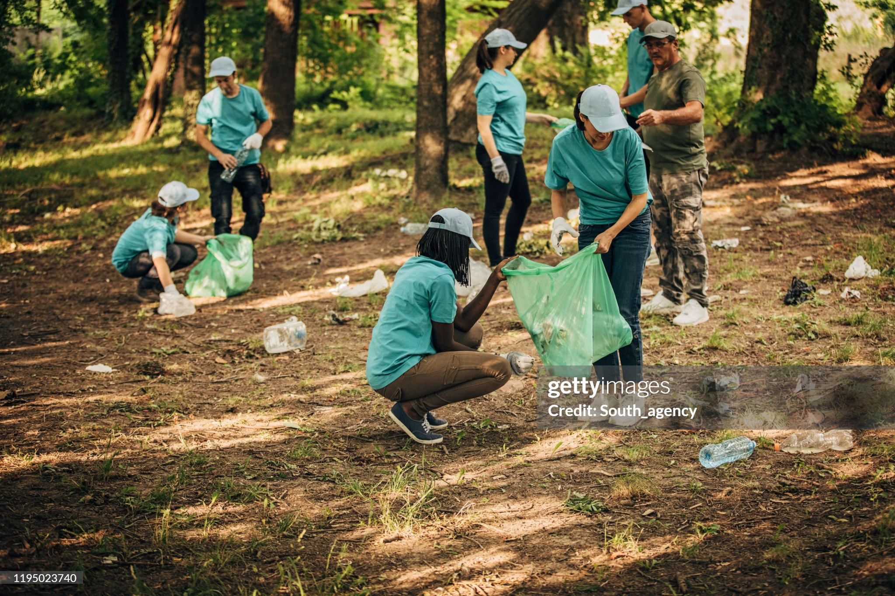
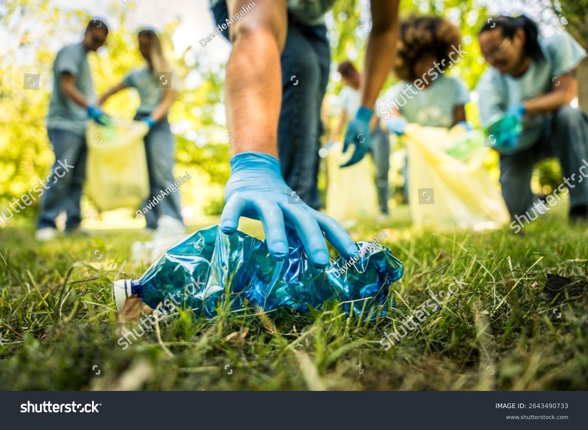
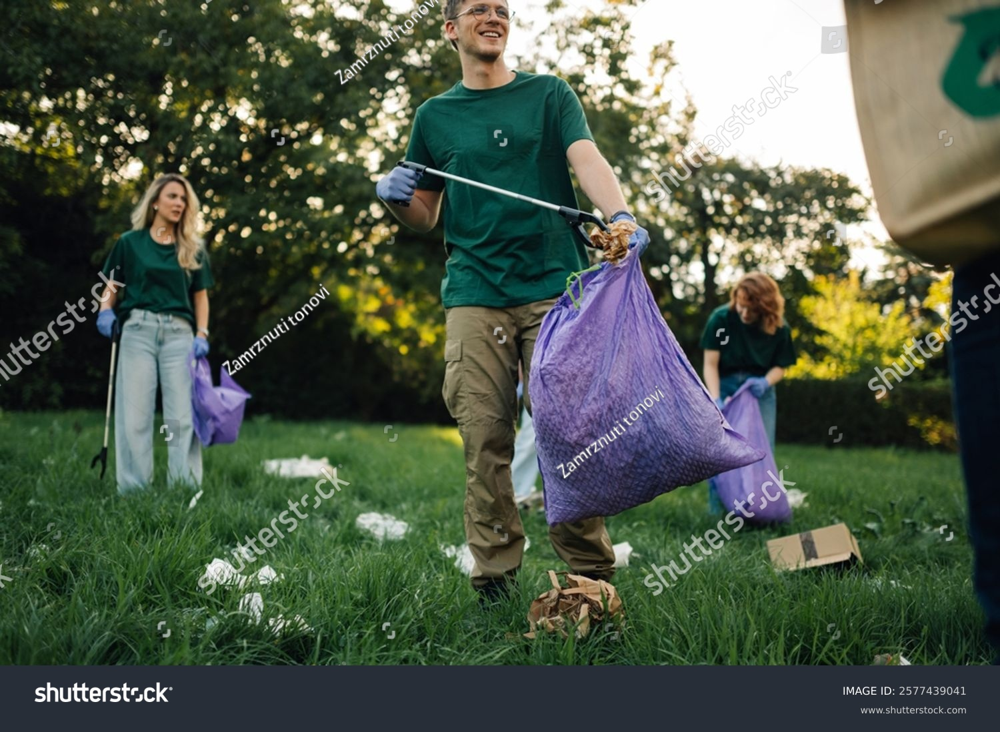
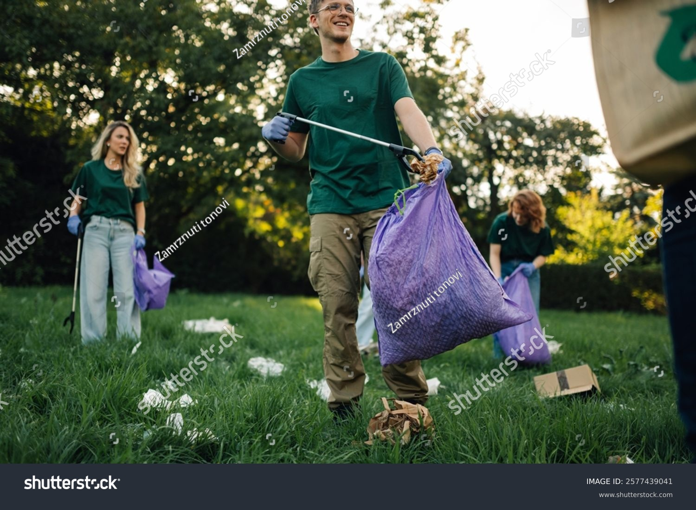
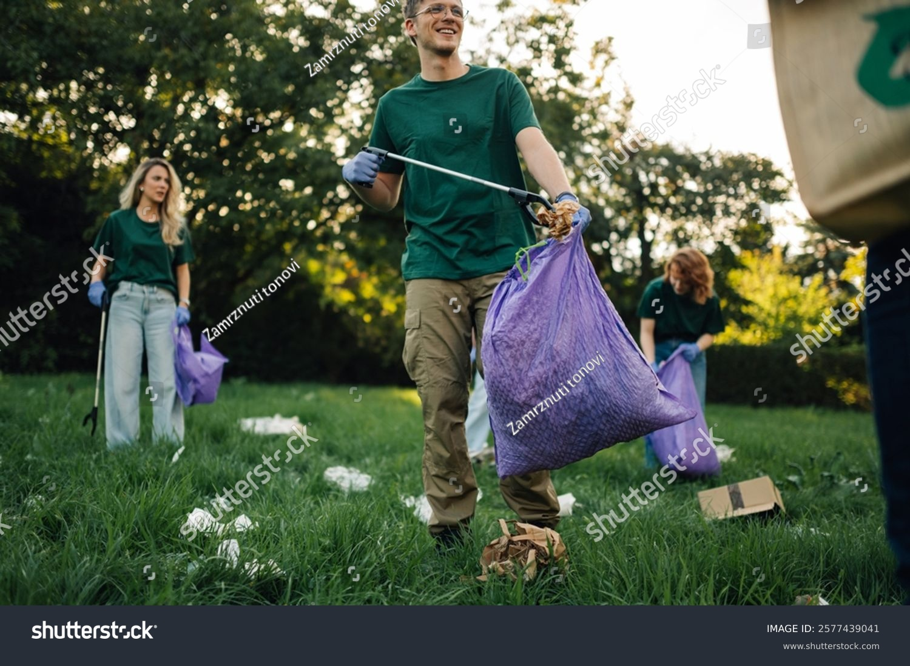

Rreth Nesh
Ne jemi një organizatë private e dedikuar për mbrojtjen e mjedisit dhe përmirësimin e pastërtisë së komuniteteve tona. Misioni ynë është të ofrojmë shërbime profesionale dhe të besueshme për pastrimin e mbeturinave, duke ndihmuar qytetet dhe fshatrat të jenë më të pastër dhe më të shëndetshëm për të gjithë.
Përmes teknologjive moderne, qasjeve inovative dhe një ekipi të përkushtuar, ne synojmë të zvogëlojmë ndotjen dhe të promovojmë riciklimin dhe menaxhimin e përgjegjshëm të mbetjeve. Besojmë se një mjedis i pastër është themeli i një shoqërie të shëndetshme dhe të qëndrueshme, dhe jemi këtu për ta bërë këtë të mundur çdo ditë.
Bashkohuni me ne për të krijuar një mjedis më të pastër, hap pas hapi.



 

